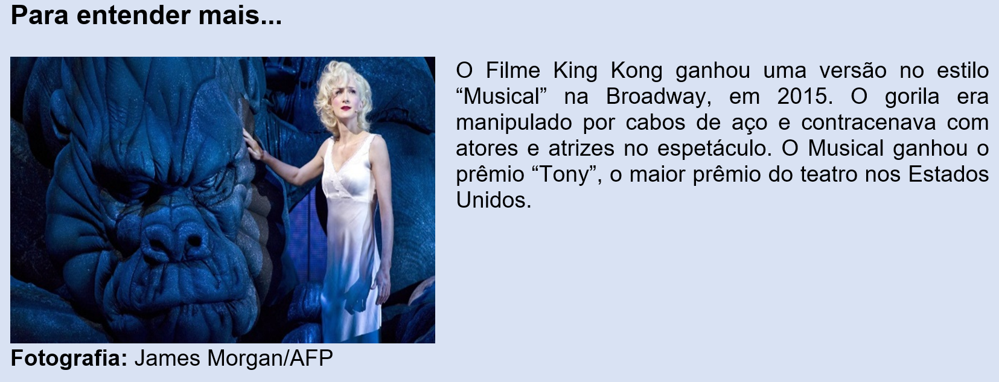

Capítulo 5: Arte contemporânea: a arte e a tecnologia
Questão-problema:
Qual é o papel da tecnologia na Arte?
Quais são as contribuições da indústria no universo da arte contemporânea?
Contextualizando...
Devemos compreender como tecnologia, um conjunto de instrumentos e técnicas que visam a resolução de um problema. A palavra tecnologia tem origem no grego "tekhne" que significa "técnica, arte, ofício" juntamente com o sufixo "logia" que significa "estudo". Definimos como tecnologias primitivas a descoberta do fogo, a invenção da roda e da escrita. As invenções que contribuíram para as grandes navegações e expansão marítima são chamadas de tecnologias medievais e, as chamadas inovações tecnológicas que provocaram profundas transformações na sociedade, chegaram à Revolução Industrial no séc. XVIII. Com o avanço das tecnologias de informação e comunicação, utilização da internet e ainda das mais avançadas, como e energia nuclear, biotecnologia e nanotecnologia, chegamos ao que é chamado de alta tecnologia. Todas elas, independente do tempo que ocorreram, têm um papel fundamental, que chamamos de inovação. A forma como a sociedade contemporânea vem se relacionando com as imagens produzidas tanto artisticamente como comercialmente, nos leva a refletir sobre o papel da arte atualmente, visto que, um mundo infinito de imagens ganha cada vez mais lugar de destaque nas mídias de massa e compõem um universo de elementos que transmitem desejos, projetos e medos. Dentro deste processo, quais são então as inovações no mundo da Arte Contemporânea?
Reconstruindo conhecimentos:
A presença da tecnologia na Arte pode ser remetida á um grande momento de ruptura com os modos de fazer arte e os padrões estéticos: a invenção da fotografia, por Daguerre em 1893. As imagens passaram a ser produzidas pela câmera fotográfica e traziam uma fidelidade com o real e uma riqueza de detalhes jamais vista nas pinturas de paisagens e retratos. Dentro deste contexto, qual seria então o papel do artista, já que os pintores investiram em uma perspectiva realista? A fotografia, devido a sua relação direta com o real, encantou um grande número de pessoas e provocou a desconfiança de vários críticos e artistas.
Deste modo, os artistas foram desafiados à inovação. Com a chegada da fotografia, a arte visual, com medo de acabar no esquecimento da população, passou por um período de renovação, com o aparecimento de estéticas como impressionismo, dadaísmo, cubismo, surrealismo, entre outros, cujo objetivo não era mais retratar a realidade tal como ela é. A esses movimentos, se deu o nome de Arte Moderna. Os artistas passaram a ter mais liberdade criativa e puderam então, deixar transparecer em suas obras os mais diversos sentimentos sobre as suas relações com o mundo.
Já no século XX, com reverberações ainda sobre o modernismo, surge na década de 1960 o que intitulamos hoje de Arte Contemporânea. É impossível pensar neste momento da Arte dividindo-a em categorias como “pintura” ou “escultura”. A arte contemporânea tem como principal característica a articulação de diferentes linguagens e materiais e o artista cada qual ao seu modo, dirigindo à arte as coisas do mundo, à realidade urbana e, principalmente, ao mundo da tecnologia.
No ano de 2019, uma exposição dedicada à artista Tarsila do Amaral, foi totalmente projetada por meio de tecnologia sensorial e de cenários imersivos. Intitulada de “Tarsila para crianças”, foi capaz de entreter até mesmo os adultos nas reinvenções das obras da artista.
Que tal fazer um tour guiado através do vídeo?
Fonte: http://g1.globo.com/globo-news/videos/v/tarsila-para-criancas-usa-tecnologia-para-reinterpretar-obras/8118390/
Na arte contemporânea brasileira, pensando em obras que utilizem como inovação as ferramentas de alta tecnologia, destaca-se pelo pioneirismo, o artista Eduardo Kac. Desde a década de 1980, ele vem propondo obras performáticas ou interativas, isto é, vários trabalhos de kac necessitam da participação do público para a sua concretização. Essa interação, na maioria das vezes, se dá pelo acesso ao site do artista. Na obra Teleporting an Unknown State (1996), o artista colocou sementes em um lugar sem luz, monitorado ao vivo pela internet. Para fornecer luz à semente foi necessário que internautas captassem a luminosidade com câmeras digitais e enviassem as imagens para o site da galeria, que as projetou sobre a planta.
Fonte: http://www.ekac.org/teleporting_%20an_unknown_state.html
Assita o vídeo:
Atualmente, fomentada pela indústria eletrônica e novas mídias, está em cena a Arte Digital. Propondo relações entre espaços públicos, arte e tecnologia, obras digitais gigantes estão sendo expostas nas principais cidades do mindo. O Vídeo Mapping (ou projeção mapeada) é uma das mais novas linguagens da arte contemporânea e tem se inserido em um número crescente de eventos ao redor do mundo. Com essa técnica, os artistas realizam projeções em superfícies não-lineares (tais como estruturas de grandes dimensões, fachadas de edifícios e estátuas) para criar uma espécie de ilusão de ótica, reconstruindo os espaços com formas e movimentos, luzes e cores.
Fonte: http://www.waves.com.br/arquivo/arte-digital/
Praticando - Reflexão e ação
Compreender as relações entre as obras de arte e tecnologia nem sempre é uma tarefa fácil, pois é necessário compreender também toda a proposta e conceito estético proposto pelo artista, da mesma forma que acontece com todas as inovações tecnológicas que nos chegam das mais diversas formas e cada vez mais rápido.
Você já havia pensado nessas formas de fazer Arte? Já presenciou a projeção de um vídeo mapping? Se sim, qual foi a sensação?
A indústria tecnológica avança a passos velozes. Cada vez se torna mais fácil produtos se tornarem obsoletos. Mas, ainda bem que existe a Arte para nos levar à uma reflexão. O que é feito com o lixo eletrônico ou tecnológico?
Fonte:https://hypescience.com/20-estupendos-exemplos-de-arte-feita-com-tecnologia-obsoleta/
Pesquise outras formas de reciclagem ou reutilização de objetos tecnológicos que poderiam, por exemplo, se tornar um objeto artístico construído por você. Caso se sinta orgulhoso de sua proposta, que tal construí-la realmente?
Mãos à obra!!!!
O que aprendi
A evolução tecnológica alterou a forma de fazer e pensar a Arte. Várias foram as modificações e inovações que, além de propor melhorias para o ser humano, fizeram as linguagens artísticas se modificar ao longo do tempo. Especificamente nas artes visuais, a fotografia foi um grande elo de ruptura quando a arte tinha a função de retratar a realidade. Artistas tiveram que ser criativos a ponto de achar uma nova função para a pintura numa sociedade cada vez mais industrializada e entusiasmada com a máquina que produzia retratos, culminando hoje na arte contemporânea, que é assim chamada por integrar as mais diversas linguagens além das altas tecnologias. Assim como no mundo virtual, a arte passa a exigir cada vez mais a interação do espectador.
A Música e a tecnologia
Como a tecnologia está inserida na música?
É possível fazer relações entre música e tecnologia?
Como a indústria está presente, através da tecnologia, na música?
Com o advento da tecnologia, a arte também foi impactada. Novas formas de pensar a tecnologia integrando-a às produções dos artistas, em especial daqueles que trabalham com a música, foram se estabelecendo. Da pré-história aos dias atuais, a música evoluiu a tal ponto que somos capazes, hoje, de compor pequenas melodias, criar ritmos e até mesmo executar instrumentos musicais na tela dos smartphones.
Todo esse contexto, vem da evolução da própria sociedade e sua busca pela inovação. Portanto, no mundo contemporâneo, nos vemos rodeados de infinitas possibilidades de aprender, estudar música e até mesmo compartilhar nossas produções musicais através de aplicativos de mensagens e vídeos em redes sociais, atingindo, desta forma, um grande número de pessoas.
A relação música-tecnologia não é um fenômeno atual; há muito tempo os instrumentos eletrônicos vêm sendo utilizados nas obras de diversos artistas. O Teremin, por exemplo, é um instrumento eletrônico que dispensa o contato das mãos do músico com o instrumento, possibilitando, desta forma, uma nova maneira de interação entre aquele que toca e o instrumento musical em si. O inventor do Teremin, foi o russo Léon Theremin. O instrumento possui duas antenas de metal que controlam a frequência e a outra o volume.
Fonte: https://www.meloteca.com/glossary/theremin/
A banda mineira Pato Fu, utilizou este instrumento musical em uma das suas composições. Na música “Eu”, é possível ver e ouvir o Teremin.
Segue o link do videoclipe oficial da música:
Mais tarde, a música foi se desenvolvendo através da tecnologia por meio da invenção do teclado musical eletrônico, entre outros artefatos. Hoje, por exemplo, temos até mesmo baterias eletrônicas que simulam perfeitamente uma bateria convencional e ocupam menos espaço no ambiente além de serem ouvidas apenas por quem a toca, através de fones de ouvido. Não obstante, ainda temos a indústria dos videogames que produzem jogos puramente musicais. Nesses jogos, por exemplo, é possível aprender a tocar guitarra e baixo, conectando o instrumento ao console (videogame). Além de ser uma experiência bastante divertida, se torna um momento de grande aprendizado para músicos iniciantes, intermediários e até mesmo profissionais. Um outro ponto que podemos destacar é a inclusão tecnológica nas produções musicais de DJ’s e na música eletrônica. Cabines antes físicas, manipuladas pelos DJ’s, agora dão espaço a cabines virtuais e que fornecem os mesmos recursos de som que as cabines de DJ’s convencionais. Essas “cabines” podem estar no nosso bolso. Isso mesmo. Há uma infinidade de aplicativos que transformam você em um DJ! Não é necessário um grande conhecimento musical para você criar suas primeiras batidas e, quem sabe, ser o DJ de uma festa, por exemplo. Assista ao vídeo sobre a tecnologia aplicada a uma mesa de DJ: Uso da tecnologia na música eletrônica resulta em inovação e criatividade. Matéria exibida no dia 16/05/2012 no Jornal da Globo.
Que aplicativos você conhece que simulam instrumentos musicais?
Eles podem substituir os instrumentos convencionais?
Baixe um aplicativo de DJ virtual e tente compor uma música. Veja e ouça o resultado. Você verá que é muito fácil compor melodias e ritmos. Vamos lá?!
O que aprendi
Nesta breve exposição, você pôde conhecer um pouco mais sobre a interação da tecnologia com a arte, em especial, com a música. Lembre-se que os instrumentos musicais convencionais ainda prevalecem, mas os aplicativos e as novas tecnologias nos proporcionam novas formas de relação com a linguagem musical. Ainda estudamos sobre os primeiros instrumentos eletrônicos e sua utilização em músicas de artistas contemporâneos. Por fim, não podemos esquecer dos games musicais, os quais se configuram como novas formas de interação música-tecnologia.
O Teatro e a tecnologia
Na cena contemporânea, qual é o papel da tecnologia na linguagem teatral?
Como e de que forma o teatro pode usar os recursos tecnológicos nas apresentações teatrais?
Como a tecnologia da indústria pode contribuir para apresentações teatrais?
Assim como em todas as outras linguagens artísticas que vimos anteriormente, a linguagem teatral também estará acompanhada de todas as evoluções propostas pela sociedade e suas tecnologias.
Se no início, ainda na cultura grega, as peças teatrais surgiram em espaços amplos, com espetáculos realizados à luz do dia, ver e ouvir eram os principais requisitos para acompanhar uma peça. Aos poucos, a luz artificial, seja em formato de velas ou lamparinas, permitiu à cena teatral trocar o espaço público por salas escuras. Com o avanço da tecnologia, já no século XX, palcos rotativos e a utilização de microfones, que oportunizaram a amplificação da voz bem como uma melhor acústica, produziram um melhor conforto tanto para atores como para os espectadores. Com a evolução digital, novas mudanças surgem, inclusive, modificando um pouco a lógica habitual do teatro, que tenta se aproximar dos espectadores que vivem sempre on-line.
Desde o surgimento das tecnologias digitais, as problematizações acerca do comportamento humano frente às máquinas permeiam várias discussões. Fato é, que na sociedade atual, cada vez mais o ser humano passa conectado. Já há também, a geração denominada de “nativos digitais”, que são aqueles que já nasceram tendo contato com todos os tipos possíveis de aparatos tecnológicos. Essa aceleração da tecnologia promove uma gradativa ruptura com os conceitos de tempo, presença e espaço. Os desdobramentos desses novos conceitos, repercute nas mais diversas áreas de conhecimento, e na Arte e especificamente no que trataremos aqui, o Teatro, não seria diferente.
Além de inovar com todas as inserções tecnológicas dentro do contexto teatral, o Teatro Digital, surge como modo de levar a linguagem cênica para o âmbito das novas tecnologias e redes virtuais de conexão, o que de certo modo, facilita o acesso e é mais cômodo para o espectador.
No que hoje está definido como teatro para a internet, os atores interagem em tempos e lugares diferentes mas ao mesmo tempo, enquanto o espectador acompanha a encenação ao vivo. Nesse contexto, os artistas defendem que essa forma de fazer teatro chega para dividir espaço, mas não para roubar a cena da forma tradicional.
Já a utilização da tecnologia digital, como projeções de cenários e utilização de hologramas, é uma prática que tem sido utilizada para atrair mais pessoas aos espetáculos teatrais. Com os hologramas, é possível que o ator contracene com ele próprio, e essa percepção do real e do virtual acaba por criar uma experiência única para o espectador.
Acompanhe no vídeo, como é a presença de hologramas num espetáculo teatral.

E você, já assistiu quantas peças teatrais tradicionais ao longo da vida? Concorda que a possibilidade do teatro para a internet seria uma forma de aproximação com o público cada vez mais conectado?
Pesquise mais sobre o assunto. Logo, você poderá descobrir quais companhias teatrais estão ofertando suas peças on-line. Algumas oferecem links gratuitos.
O que aprendi
Num contexto cada vez mais tecnológico, o teatro foi a linguagem artística que talvez tenha se adaptado por último às altas tecnologias. Como envolve a encenação, muitas vezes a gravação de um espetáculo para divulgação na internet pode perder o contexto do que se pode considerar a essência teatral: a presença física de ator e espectador num mesmo espaço. De certo modo, é necessário compreender também que o próprio conceito de espaço e tempo tem se formatado ao longo dos anos. O teatro como conhecemos, segue existindo, mas sem querer perder espaço, espetáculos teatrais tendem a inserir cada vez mais tecnologias de projeção de imagens para atrair um público cada vez mais adepto e necessitado dessas inovações.
A dança e a tecnologia
Como a tecnologia está presente na dança?
É possível fazer a relação entre dança e tecnologia?
Como a indústria se faz presente nos espetáculos de dança?
Como já vimos no decorrer deste e-book, a dança é uma das mais antigas formas de manifestação da arte. Diz-se que a dança é irmã da música e existe, entre estudiosos, divergências sobre qual dessas linguagens artísticas surgiu primeiro. O fato é que uma música complementa a dança e a dança complementa a música. Com o passar dos séculos, novas configurações foram se estabelecendo e a dança foi se modificando ao longo do tempo. Dos primeiros passos “primitivos” até os dias atuais, muita coisa mudou. Hoje, temos uma infinidade de tipos de danças – sempre acompanhadas por músicas e músicos. Enfim, esta discussão não para por aqui!
Mas vamos pensar nos dias atuais. A dança encontra espaços dentro do contexto tecnológico no qual vivemos? Ou ela está à parte de todo este processo? Você já refletiu sobre isso?
No mundo atual, a dança também é inteiramente influenciada pelas novas tecnologias. E essas tecnologias nos permitem dar os primeiros passos em relação a um determinado tipo de dança, faz com que nos socializemos com os outros, além de ser um momento de extrema diversão. Os games foram os pioneiros em unir dança, ritmo e movimento. Através de consoles (videogames), podemos dançar na frente da televisão sem medo de errar os passos. Podemos, ainda, cantar a música que toca junto com os movimentos que esses jogos nos pedem e acabamos nos tornando excelentes dançarinos! Esses recursos tecnológicos nos games e a captação dos nossos movimentos são feitos por sensores que detectam cada uma das nossas ações. Assim fica fácil saber se estamos dançando “corretamente” ou quando precisamos “melhorar”.
Acompanhe, no vídeo abaixo, como se dá a fusão entre dança e tecnologia:
Ainda temos de considerar a inteligência artificial que é capaz de interagir com os seres humanos e é capaz de criar passos e movimentos semelhantes aos nossos quando dançamos. Se antigamente precisávamos de dois dançarinos num palco para interpretar e demonstrar um tipo de dança, hoje, por exemplo, ela pode ser feita por robôs. Isso mesmo!
O bailarino Fredrik Rydman dança com robô ao som de Igor Stravinsky.
E você, já havia pensado que a tecnologia está presente na dança? Que os jogos e games foram os precursores desta inclusão? Você já assistiu a um espetáculo de dança no qual havia a tecnologia presente? E de que forma ela se manifestava? Por meio de gráficos, de robôs com inteligência artificial, luz e sonorização diferentes dos convencionais? Vamos lá?!
O que aprendi
Que a dança evoluiu com a sociedade e que, como os diversos campos do conhecimento, ela não estaria alheia aos movimentos tecnológicos contemporâneos. Desde as discussões sobre o seu surgimento até sua inserção nos games, interação com robôs dotados de inteligência artificial e as sapatilhas com sensores, não há como negar que a dança, além de ser uma das manifestações mais genuínas do nosso corpo é também uma forma de expressão que, por meio da tecnologia, nos faz perder a inibição de dançar. Portanto, ela contribui para a nossa qualidade de vida e para as relações que estabelecemos com os diferentes campos artísticos. Perceba os movimentos e os gestos que você faz ao longo do seu dia a dia. Eles poderiam ser movimentos de dança? Reflita sobre isso. Vamos lá?!